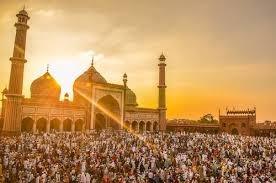
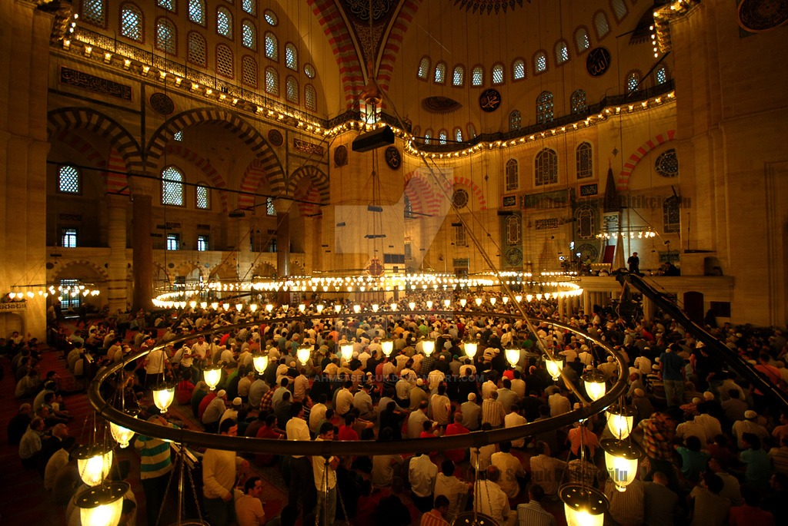
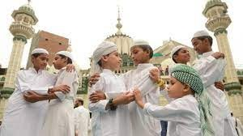
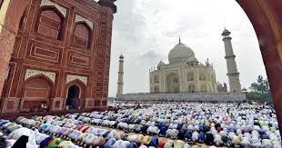

Eid al-Fitr (/ˌiːd əl ˈfɪtər, -trə/; Arabic: عيد الفطر, romanized: ʿĪd al-Fiṭr, lit. 'Holiday of Breaking the Fast',[4] IPA: [ʕiːd æl ˈfɪtˤr]) is the earlier of the two official holidays  celebrated within Islam (the other being Eid al-Adha). While the Qur'an does not mention the celebration of Eid,[5] the religious holiday of Eid al-Fitr is celebrated by Muslims worldwide because it marks the end of the month-long dawn-to-sunset fasting of Ramadan.[6] Some Muslims, however, do not view it as a sacred holiday.[7]
Eid al-Fitr falls on the first day of Shawwal in the Islamic calendar; this does not always fall on the same Gregorian day, as the start of any lunar Hijri month varies based on when the new moon is sighted by local religious authorities. The holiday is known under various other names in different languages and countries around the world. The day is also called Lesser Eid, or simply Eid.[8]

Eid al-Fitr has a particular salat (Islamic prayer) that consists of two rakats (units) generally performed in an open field or large hall.

It may only be performed in congregation (jamāʿat) and features seven additional Takbirs (raising of the hands to the ears while saying "Allāhu ʾAkbar", meaning "God is the greatest") in the Hanafi school of Sunni Islam: three at the start of the first rakat and three just before rukūʿ in the second rakat.[9] Other Sunni schools usually have 12 Takbirs, similarly split in groups of seven and five.
In Shia Islam, the salat has six Takbirs in the first rakat at the end of qira'a, before rukūʿ, and five in the second.[10] Depending on the juristic opinion of the locality, this salat is either farḍ (فرض, obligatory), mustaḥabb (strongly recommended) or mandūb (مندوب, preferable). After the salat, Muslims celebrate the Eid al-Fitr in various ways[11] with food ("Eid cuisine") being a central theme, which also gives the holiday the nickname "Sweet Eid" or "Sugar Feast".[12][13]

History
According to Muslim tradition Eid al-Fitr was originated by the Islamic prophet Muhammad.[14] According to certain traditions, these festivals were initiated in Medina after the migration of Muhammad from Mecca.
Anas, a well-known companion of the Islamic prophet, narrated that, when Muhammad arrived in Medina, he found people celebrating two specific days in which they entertained themselves with recreation and merriment. At this, Muhammad remarked that God had fixed two days of festivity: Eid al-Fitr and Eid al-Adha.[15]